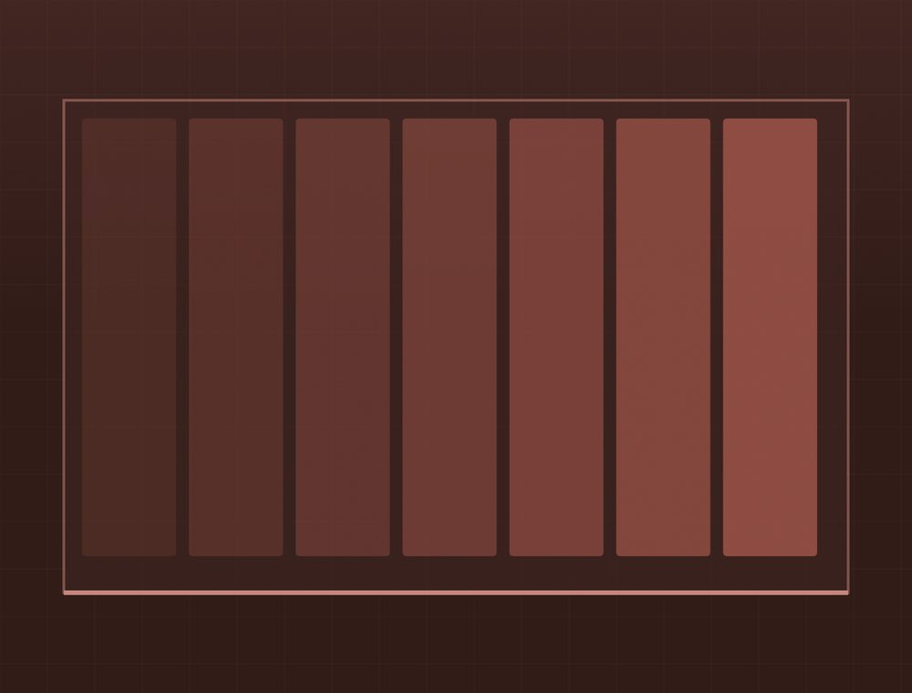
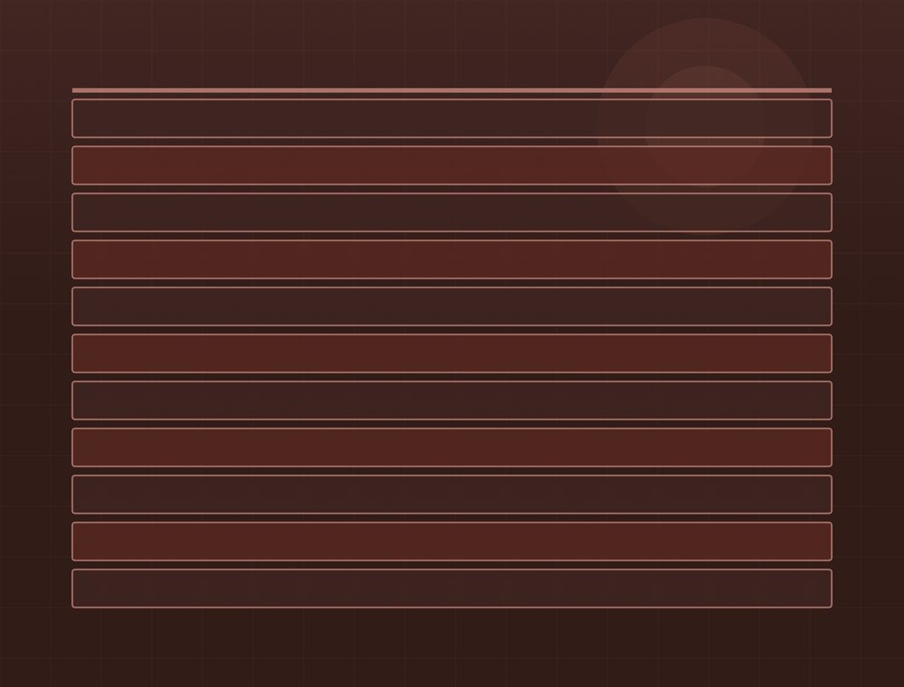
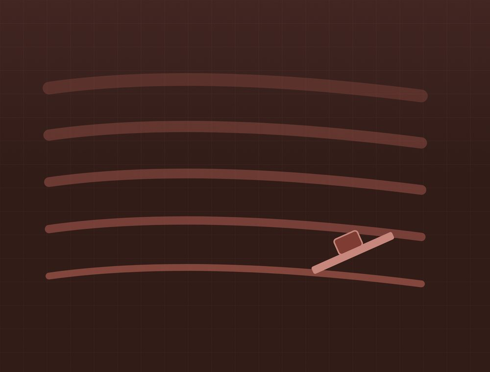
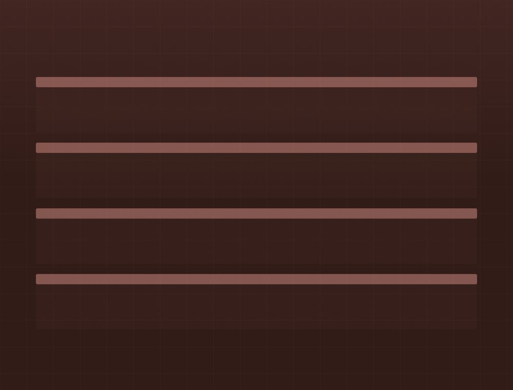

Mitä teemme
Neljä palvelukokonaisuutta. Kaikki voidaan tehdä joko erillisenä työnä tai osana suurempaa kokonaisuutta.
Sisämaalaus

Asuntojen ja toimitilojen sisämaalaus. Suojaus, tasoitus ja pohjustus kuuluvat työhön — ne ovat se osa, joka ratkaisee lopputuloksen.
- Seinien ja kattojen maalaus
- Listat, ovet ja karmit
- Keittiön kalusteovet
- Kosteiden tilojen pinnat
- Suojaus ja loppusiivous
Ulkomaalaus ja julkisivut

Puujulkisivun huoltomaalaus ja uuden pinnan maalaus. Vanha pinta pestään ja irtoava maali poistetaan ennen uutta — muuten uusi pinta irtoaa vanhan mukana.
- Puujulkisivun huoltomaalaus
- Pesu ja irtoavan maalin poisto
- Homeenpoisto ja pohjustus
- Räystäät, ikkunat ja ovet
- Peltipintojen maalaus
Tasoitetyöt

Seinien ja kattojen tasoitus maalausta tai tapetointia varten. Tasoitus on se, mikä tekee pinnasta suoran — maali ei korjaa epätasaista seinää.
- Seinien ja kattojen tasoitus
- Saumojen ja ruuvinkantojen tasoitus
- Vanhan pinnan korjaus
- Hionta ja pölynhallinta
Tapetointi

Tapetointi ja vanhan tapetin poisto. Pohja tasoitetaan ennen uutta tapettia, koska tapetti ei peitä epätasaisuuksia vaan korostaa niitä.
- Vanhan tapetin poisto
- Pohjan tasoitus ja pohjustus
- Tapetointi
- Kuviollisten tapettien kohdistus
Kysymyksiä
Saako maalaustyöstä kotitalousvähennystä?
Asunnossa tehdyn maalaustyön työosuudesta voi tietyin edellytyksin saada kotitalousvähennystä. Uudisrakentaminen ei oikeuta vähennykseen. Voimassa olevat ehdot ja enimmäismäärät löytyvät osoitteesta vero.fi.
Mihin aikaan vuodesta ulkomaalaus kannattaa tehdä?
Ulkomaalaus tehdään lämpimänä ja kuivana aikana. Maalin valmistaja ilmoittaa vähimmäislämpötilan ja suurimman sallitun ilmankosteuden, ja niitä noudatetaan — liian kylmässä tai kostealla maalattu pinta ei kestä.
Kuinka kauan asunnon maalaus kestää?
Se riippuu pinta-alasta ja siitä, paljonko tasoitusta tarvitaan. Kerromme arvion katselmuksen yhteydessä, ja aikataulu kirjataan sopimukseen.
Siirrättekö huonekalut?
Sovitaan erikseen. Yleensä tilaaja tyhjentää tilan ja me suojaamme sen, mutta voimme hoitaa myös siirrot, jos se sovitaan etukäteen.
Kerro mitä tarvitset
Soita tai lähetä tarjouspyyntö. Käydään kohde läpi ja katsotaan, miten se kannattaa tehdä.